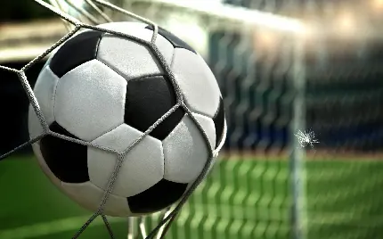

فوتبال
مقدمه و آموزش اصول پایه
🏆 مقاله: آموزش فوتبال — بخش اول: مقدمه و آموزش اصول پایه
فوتبال، پرطرفدارترین ورزش جهان، تنها یک بازی نیست؛ بلکه ترکیبی از علم، هنر، استراتژی و روحیهی تیمی است. آموزش فوتبال، بهویژه در ردههای سنی پایه، نقشی تعیینکننده در رشد فنی و ذهنی بازیکنان دارد. هرچه آموزش ساختارمندتر و علمیتر باشد، احتمال موفقیت در سطوح بالاتر بیشتر خواهد بود.
یکی از اشتباهات رایج در آموزش فوتبال، تمرکز صرف بر نتایج مسابقات است. در حالی که آموزش باید بر رشد فردی بازیکن، فهم بازی، تصمیمگیری سریع، و تقویت روحیهی همکاری متمرکز باشد. مربی موفق کسی است که نهتنها مهارتهای فنی، بلکه ارزشهای اخلاقی و ذهنی را در بازیکنان نهادینه کند.
فرآیند آموزش فوتبال باید متناسب با سن و سطح درک بازیکن تنظیم شود. بهطور کلی، سه مرحلهی اصلی برای آموزش وجود دارد:
۱. ردهی نونهالان (۶ تا ۱۰ سال): تمرکز اصلی بر آشنایی با توپ، ایجاد علاقه به بازی، و توسعهی مهارتهای پایه است. در این سن، آموزش باید بهصورت بازی و سرگرمی ارائه شود. تمریناتی مانند دریبل ساده، کنترل توپ با پا، و بازیهای گروهی کوچک بسیار مؤثرند.
۲. ردهی نوجوانان (۱۱ تا ۱۵ سال): در این مرحله، بازیکنان توانایی درک تاکتیکهای ساده و همکاری تیمی را پیدا میکنند. آموزش باید شامل مهارتهایی مثل پاسکاری، شوت دقیق، جایگیری در زمین و حرکات بدون توپ باشد.
۳. ردهی جوانان و بزرگسالان (۱۶ سال به بالا): تمرکز از مهارت فردی به تاکتیکهای تیمی، فیتنس بدنی، و تحلیل حریف تغییر میکند. مربیان در این سطح باید از فناوریهایی مانند تحلیل ویدئویی و دادهکاوی استفاده کنند.
مهارتهای پایه در فوتبال
آموزش مهارتهای پایه، ستون اصلی موفقیت هر بازیکن است. مهمترین مهارتها عبارتاند از:
کنترل توپ (Ball Control): توانایی دریافت توپ با پا، سینه یا ران و حفظ تسلط بر آن. تمرین با توپهای سبک و تمرکز بر نرمی پاها اهمیت زیادی دارد.
پاس دادن (Passing): انتقال دقیق توپ به همتیمیها. بازیکن باید جهت، سرعت و زمان پاس را یاد بگیرد. تمرینهای «یک-دو» یا «دایرهی پاس» بسیار مؤثرند.
دریبل (Dribbling): هنر عبور از حریف با توپ. این مهارت نیازمند چابکی، تغییر جهت سریع و هماهنگی چشم و پا است.
شوتزنی (Shooting): تکنیک درست ضربه به توپ برای گلزدن. زاویهی بدن، محل برخورد پا با توپ و دقت هدفگیری سه عامل کلیدی هستند.
هد زدن (Heading): مهارتی مهم برای ارسال یا دفع توپ در موقعیتهای هوایی. باید به زمانبندی پرش و استفاده از پیشانی تمرکز کرد.
نقش مربی در آموزش
مربی فوتبال تنها آموزگار تکنیک نیست؛ او رهبر روانی و انگیزشی تیم است. یک مربی باید ویژگیهای زیر را داشته باشد:
- توانایی تشخیص استعداد و برنامهریزی متناسب با آن
- مهارت در ارتباط مؤثر با بازیکنان
- آشنایی با روانشناسی ورزش
- تسلط بر اصول فیزیولوژی و تمرینات بدنی
- الگو بودن در رفتار، نظم و احترام
مربی باید بداند هر بازیکن نیاز و انگیزهی متفاوتی دارد. بعضی با تشویق، و بعضی با رقابت بهتر پیشرفت میکنند. آموزش مؤثر زمانی رخ میدهد که بازیکن به مربی اعتماد کند.
⚽ آموزش تاکتیکی و تمرینات تخصصی
در فوتبال مدرن، دیگر صرفاً مهارت فردی کافی نیست. موفقیت تیم به درک بازیکنان از سیستمهای بازی، هماهنگی گروهی و اجرای دقیق تاکتیکها بستگی دارد. به همین دلیل، آموزش تاکتیکی در کنار تمرینات فنی از اهمیت ویژهای برخوردار است.
۱. آموزش تاکتیکی (Tactical Training)
تاکتیک در فوتبال به معنای تصمیمگیری صحیح در شرایط مختلف بازی است. هر بازیکن باید بداند در هر لحظه چه وظیفهای دارد. تاکتیکها به سه سطح تقسیم میشوند:
الف) تاکتیک فردی: یادگیری چگونگی رفتار بازیکن هنگام داشتن یا نداشتن توپ. مثلاً مدافع باید جایگیری مناسب برای قطع پاس را یاد بگیرد، مهاجم باید زمان مناسب فرار به پشت مدافع را تشخیص دهد و هافبک باید تصمیم بگیرد که پاس بدهد یا توپ را نگه دارد.
ب) تاکتیک گروهی: رفتار چند بازیکن در کنار هم برای رسیدن به هدفی مشخص، مانند اجرای پرس گروهی برای گرفتن توپ، پاسکاری مثلثی در جناح، یا همکاری دو مهاجم برای ایجاد موقعیت گل.
ج) تاکتیک تیمی: کل سیستم بازی، مثلاً سیستم ۴-۳-۳ یا ۴-۲-۳-۱. در این مرحله بازیکنان باید به ساختار تیم، نظم دفاعی، فاصلهی خطوط و گردش توپ مسلط باشند.
۲. تمرینات تخصصی بر اساس پست بازیکن
هر پست در فوتبال نیاز به تمرینات خاص خود دارد. آموزش علمی باید متناسب با موقعیت بازیکن طراحی شود:
دروازهبان: واکنش سریع، پرش، کنترل توپهای هوایی، خروج بهموقع و تمرکز ذهنی.
مدافع: جاگیری، تکل صحیح، قطع پاس، پوشش همتیمیها و خروج از منطقه خطر.
هافبک: کنترل جریان بازی، دید محیطی، پاسهای بلند و کوتاه دقیق و تعادل بین دفاع و حمله.
مهاجم: حرکت بدون توپ، ضربه نهایی، پیشبینی حرکت مدافع و حفظ خونسردی در محوطهی جریمه.
تمرینات باید ترکیبی از بازیهای موقعیتی، تمرینات سرعتی و شبیهسازی موقعیتهای واقعی مسابقه باشند.
۳. آمادگی جسمانی و فیتنس
فوتبال مدرن نیازمند بدن آماده و مقاوم است. بازیکنی که از نظر بدنی ضعیف باشد، نمیتواند تاکتیکها را بهدرستی اجرا کند. برنامهی فیتنس باید شامل پنج بخش باشد:
۱. قدرت عضلانی: تمرینات با وزنه سبک و حرکات پلیومتریک (مثل پرش و جهش).
۲. استقامت قلبی-عروقی: دویدنهای منقطع (Interval Running) و تمرینات HIIT.
۳. چابکی (Agility): تمرین با مخروطها، تغییر جهت سریع و واکنش به توپ.
۴. سرعت: تمرین شتاب و دویدنهای ۵ تا ۳۰ متری.
۵. انعطافپذیری: حرکات کششی پویا قبل از تمرین و استاتیک بعد از تمرین.
۴. برنامهریزی تمرینات
مربی باید برنامهی هفتگی و ماهیانه طراحی کند تا بدن بازیکن دچار خستگی مفرط نشود. یک الگوی سادهی هفتگی برای تیمهای پایه میتواند چنین باشد:
شنبه: تکنیک و کنترل توپ — تمرین فردی با توپ
یکشنبه: تاکتیک تیمی — بازیهای کوچک (Small-Sided)
دوشنبه: فیتنس بدنی — تمرینات سرعت و استقامت
سهشنبه: تمرکز و تصمیمگیری — تمرینات موقعیتی
چهارشنبه: مرور تمرینات و بازی تمرینی — مسابقه دوستانه
پنجشنبه: ریکاوری — کشش و تمرین سبک
جمعه: استراحت کامل — بدون تمرین
۵. تغذیه و ریکاوری
بدن بازیکن فوتبال مانند موتور مسابقه است؛ اگر سوخت و نگهداری مناسب نداشته باشد، عملکردش افت میکند. اصول اصلی تغذیهی فوتبالیست عبارتاند از:
- مصرف کربوهیدرات پیچیده (برنج، پاستا، سیبزمینی) برای تأمین انرژی
- پروتئین کافی (مرغ، ماهی، تخممرغ، حبوبات) برای ترمیم عضلات
- آب کافی در طول تمرین و بعد از آن
- خواب منظم و حداقل ۷ ساعت در شبانهروز
ریکاوری درست باعث میشود بدن سریعتر به حالت ایدهآل برگردد و از آسیبهای عضلانی جلوگیری شود. استفاده از ماساژ، دوش آب سرد، تمرینات تنفسی و ریلکسیشن ذهنی در بازگشت بدن بسیار مؤثر است.
روانشناسی فوتبال، نقش فناوری
در مرحلهی نهایی آموزش فوتبال، تمرکز اصلی بر توسعهی هوش تاکتیکی و تصمیمگیری سریع در شرایط واقعی بازی است. بازیکنان باید یاد بگیرند که چگونه حرکات خود را با سایر اعضای تیم هماهنگ کنند و با شناخت دقیق از موقعیت توپ، فضا و بازیکنان حریف، بهترین تصمیم را در کوتاهترین زمان ممکن بگیرند. یکی از روشهای کاربردی برای تقویت این مهارتها، تمرین در قالب بازیهای کوچک (Small-Sided Games) است که باعث افزایش سرعت تفکر و دقت در پاسکاری و شوتزنی میشود.
در کنار تاکتیک و تکنیک، آمادگی ذهنی بازیکنان نیز اهمیت فراوانی دارد. فوتبال تنها یک ورزش فیزیکی نیست، بلکه میدان رقابتی است که در آن اعتماد به نفس، تمرکز، خلاقیت و کنترل احساسات نقش حیاتی ایفا میکنند. مربیان موفق معمولاً از روانشناسی ورزشی برای افزایش روحیهی تیمی و بهبود عملکرد فردی استفاده میکنند. بازیکنانی که از لحاظ ذهنی قوی هستند، بهتر میتوانند با فشار مسابقات، اشتباهات و شکستها کنار بیایند.
تغذیهی مناسب، خواب کافی و ریکاوری منظم نیز از ارکان اساسی در عملکرد فوتبالیستها محسوب میشود. رژیم غذایی باید سرشار از کربوهیدراتهای پیچیده، پروتئینهای باکیفیت و مواد معدنی باشد تا انرژی لازم برای تمرینات سنگین تأمین گردد. همچنین خواب کافی به بازسازی عضلات و حفظ تمرکز ذهنی کمک میکند. فوتبالیست حرفهای باید سبک زندگی خود را طوری تنظیم کند که هم بدن و هم ذهنش در بالاترین سطح عملکرد باقی بمانند.
در نهایت، آموزش فوتبال فرآیندی پیوسته و مادامالعمر است. بازیکنان در هر سطحی که باشند، همواره میتوانند چیزهای تازهای یاد بگیرند و پیشرفت کنند. موفقیت در فوتبال ترکیبی از تمرین مستمر، انضباط شخصی، پشتکار و عشق واقعی به بازی است. هر فوتبالیستی که این اصول را سرلوحهی مسیر خود قرار دهد، میتواند به اوج برسد و الهامبخش نسلهای آینده باشد.